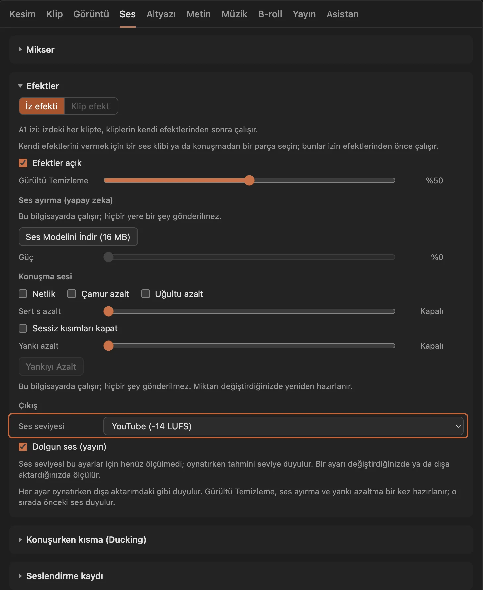
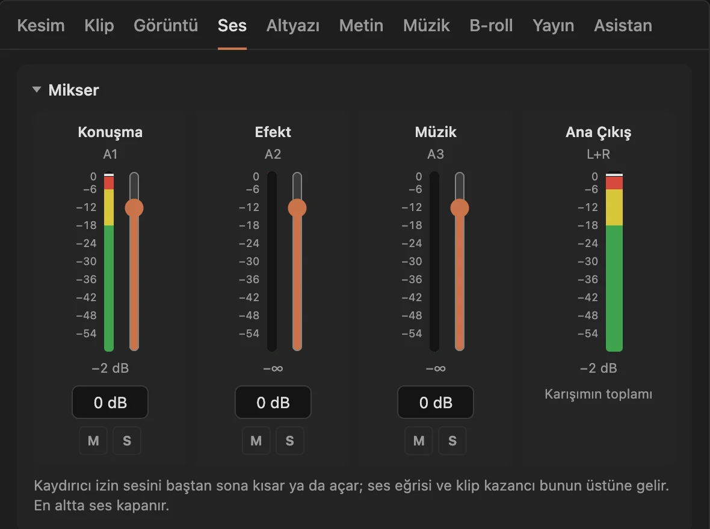
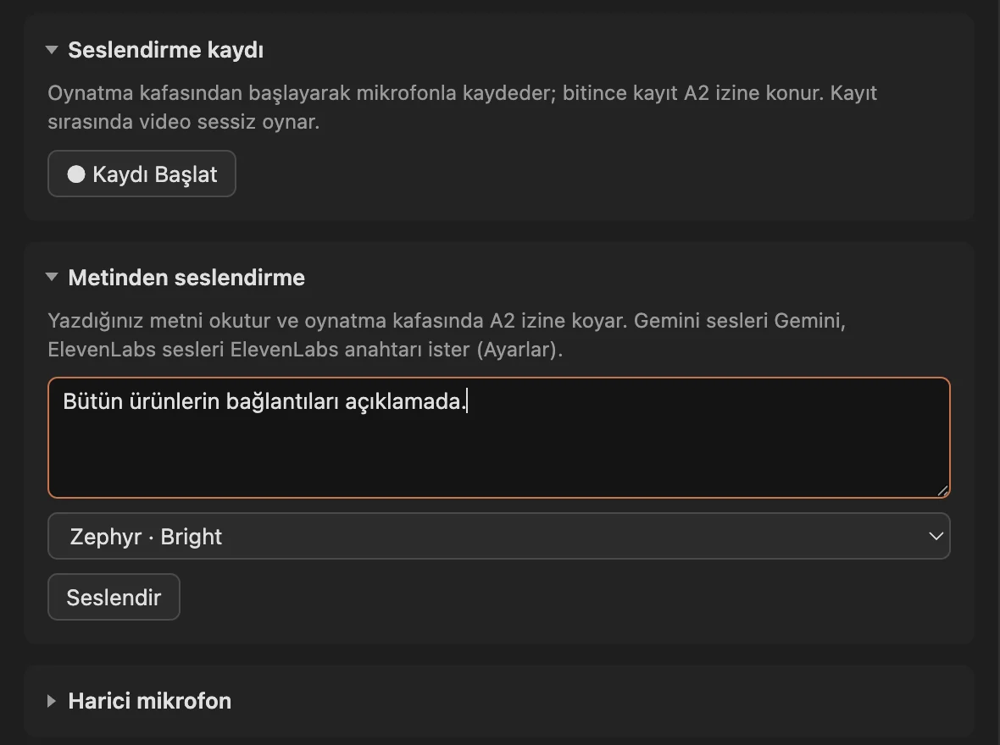

Ses ve Mikser
Ses sekmesi konuşmanı temizler, doğru seviyeye getirir ve müziği altında tutar. Her ayar oynatırken dışa aktarımdaki gibi duyulur.

Mikser
Her iz için bir sürgü: Konuşma, Efekt, Müzik ve karışımın toplamı için Ana Çıkış; oynatırken ölçerleriyle. Sürgü izini baştan sona kısar ya da açar; en altta iz kapalıdır. Sürgüye çift tıkla (ya da Alt ile tıkla), 0 dB'ye döner.

Efektler
Efektler bir izin tamamında (İz efekti) ya da tek bir klipte veya konuşmanın bir parçasında (Klip efekti) çalışır; klibin kendi efektleri izinkilerden önce çalışır. Efektler açık hepsini açıp kapar.
- Gürültü Temizleme: odanın uğultusunu alır.
- Ses ayırma (yapay zeka): konuşmayı tutar, gerisini atar. Bu bilgisayarda çalışır; Ses Modelini İndir (16 MB) modelini bir kez indirir, sonra Sesi Temizle ve Güç.
- Konuşma sesi: Netlik, Çamur azalt, Uğultu azalt, Sert s azalt ve Sessiz kısımları kapat.
- Yankı azalt: miktarı ayarla, sonra Yankıyı Azalt. Bu bilgisayarda çalışır.
Çıkış
- Ses seviyesi: YouTube (-14 LUFS), Podcast (-16 LUFS) ya da Olduğu Gibi. Konuşma ölçülür ve o seviyeye getirilir.
- En Yüksek Seviye (tepe): karışımın en çok ne kadar yükselebileceği.
- Dolgun ses (yayın).
Konuşurken kısma
Müziğim ve seslerim konuşurken kısılsın: sen konuşurken kendi müziğin ve seslerin Kısma Miktarı kadar kısılır, sonra Geçiş süresi içinde yavaşça geri gelir. Uygulamanın yaptığı müzik ve Ses Efektleri kütüphanesindeki sesler kısılmaz.
Seslendirme kaydı ve metinden seslendirme
- Seslendirme kaydı: ● Kaydı Başlat mikrofonundan oynatma kafasından itibaren, A2'ye kaydeder; video bu sırada sessiz oynar.
- Metinden seslendirme: Okunacak metin'i yaz, bir Ses seç ve Seslendir'e bas. Oynatma kafasında A2'ye gelir. Gemini sesleri Gemini anahtarı, ElevenLabs sesleri ElevenLabs anahtarı ister.

Harici mikrofon
Ayrıca kaydedilmiş bir mikrofon kayda sesinden eşlenir ve kameranın sesinin yerine geçer: Mikrofon Kaydı Ekle…. Kamera Sesine Dön bunu geri alır.